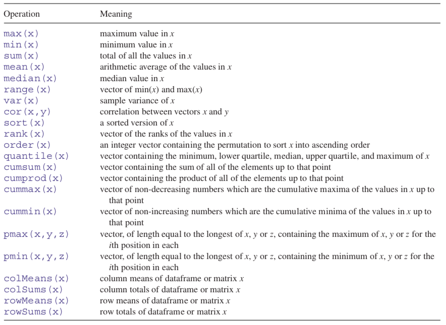
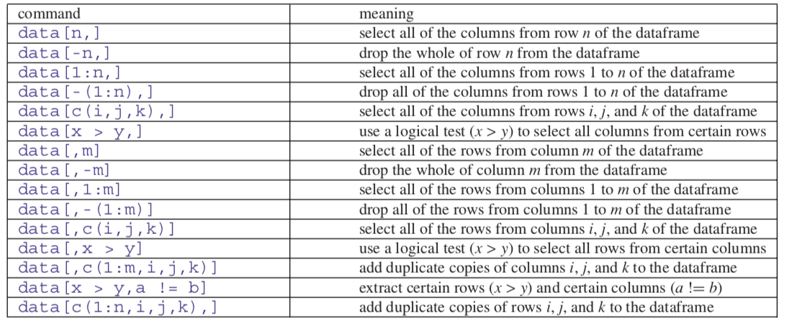
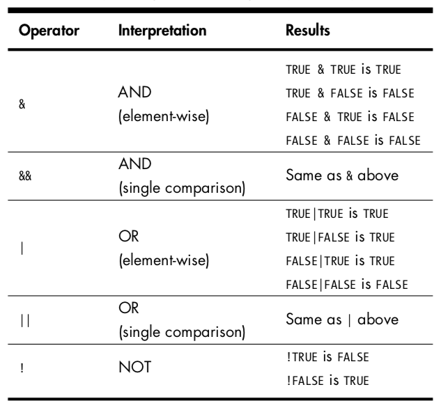

Bölüm5 Temel Nesneler
Bu bölümde kodlama için ihtiyaç duyacağınız temel yapılar açıklanacak ve uygulamalar ile desteklenecektir. Farklı uygulamalar ders esnasında eş zamanlı yapılacağından lütfen online dersleri takip ediniz.
5.1 Aritmetik (Arithmetic)
R, en basit haliyle hesap makinesi olarak kullanılabilir. Toplama +, çıkarma -, çarpma *, bölme / operatörleri ile gerçekleştirilir.
## [1] 9Birden fazla matematiksel işlem aynı satırda gerçekleştirilebilir.
## [1] 7## [1] 24## [1] 8İşlemler parantez yardımıyla önceliğine göre yazılabilir, yazılmadığı taktirde matematiksel işlem önceliği geçerlidir.
## [1] 17İşlem devam edecek biçimde tanımlanırsa console + simgesi ile devam edecek ve işlem tamamlanana kadar yeni işleme geçmenize engel olacaktır. İşlemi tamamlamalı veya yeni işleme geçmek için esc tuşunu kullanmalısınız.
## [1] 100Yapılan işlemler sonucu elde edilen çok büyük veya çok küçük sonuçlar için output exponent olarak verilir.
## [1] 3.6e+071.3e2 (130 anlamına gelir. e2: ondalık noktasını iki basamak sağa taşı)
1.4e-1 (0.14 anlamına gelir. e-1: ondalık noktasını bir basamak sola taşı)
Uygulamada elde edilen sonucun integer (tamsayı) olması gerekebilir. Bu noktada elde edilen output üste, alta veya 0.5 üzeri ya da altı olma durumuna göre farklı komutlar yardımı ile yuvarlanabilir.
- floor: alta yuvarla
## [1] 5## [1] 5- ceilign: üste yuvarla
## [1] 4## [1] 4- round: 0.5 üzeri ise üste, 0.5 altı ise alta yuvarla
## [1] 6## [1] 5Negatif sayılarda komutların nasıl işlediğini inceleyebilirsiniz.
round komutu ile virgülden sonra kaç basamak olması gerektiğini belirterek yuvarlama işlemi yapabilirsiniz.
## [1] 1.25Kullanılabilecek matematiksel fonksiyonlara örnek olarak (Crawley 2012)

5.2 Nesneleri Tanımlama (Assigning Objects)
Temel işlevlerden bir diğeri kullanılacak değişkenlerin tanımlanmasıdır. Değişken için seçilecek isim mümkün olan en kısa haliyle tanımlanarak kavram kargaşası önlenmelidir.
R, büyük ve küçük harfe duyarlıdır, dolayısıyla tanımlanan \(B\) ve \(b\) iki farklı değişkeni temsil eder.
Değişken ismi iki veya daha fazla kelimeden oluşacaksa kelimeler arasında boşluk yerine nokta kullanılmalıdır. (
neura link)Değişken ismi sayı veya sembol ile başlayamaz. (
1a,&b)
Değişken tanımlama işlemi <- operatörü ile gerçekleştirilir. Tanımlanan değişken adı ile çağrılmazsa veya print komutu kullanılmazsa çıktı yazdırılmaz.
## [1] 3Sayısal olmayan değer tanımlamaları tırnak içerisinde yapılmalıdır.
Tanımlanan değişken veya fonksiyon ile ilgili notlar # ile tanımlanır.
Çıktıda basılan [.] kaçıncı gözlemden devam edildiğini gösterir. Örneğin 30 gözleminin [26] ifadesinin yardımı ile 26. gözlem olduğunu kolaylıkla söyleyebiliriz. [.] ifadeleri asıl seride yer almaz, yalnızca yol gösterici olarak çıktıda gözlenir.
## [1] 5 6 7 8 9 10 11 12 13 14 15 16 17 18 19 20 21 22 23 24 25 26 27 28 29
## [26] 30 31 32 33 34 35 36 37 38 39 40 41 42 43 44 45 46 47 48 49 505.3 Vektörler (Vectors)
Vektör oluşturmak için c() operatör kullanılmaktadır. Vektörler
- numeric
- character
- logical
- integer
- complex
yapıları içerebilir. Vektörler yalnızca aynı yapıda gözlemler içerebilir.
x <- c(0.5, 0.6) # numeric
x <- c(TRUE, FALSE) # logical
x <- c(T, F) # logical
x <- c("a", "b", "c") # character
x <- 9:29 # integer
x <- c(1+0i, 2+4i) # complexT ve F, TRUE ve FALSE’a karşılık kullanılan kısaltma yapılardır.
## [1] TRUE FALSEAynı zamanda vector komutu ile de vektör oluşturabilirsiniz. Vektörü tanımlarken belirlenen içerik yapısına göre oluşturulur.
## [1] 0 0 0 0 0 0 0Complex elemanları içerecek bir vektör oluşturmak istendiğinde;
## [1] 0+0i 0+0i 0+0i 0+0i 0+0i 0+0i 0+0iAynı değişken adı birden fazla tanımlamada kullanılırsa yapılan son tanımlama geçerli olacaktır. Kod yazarken kullandığınız değişken isimlerine ve doğru yazıma dikkat ediniz.
Vektör uzunluğu length() komutu ile sorgulanır.
## [1] 68Vektör aynı yapıda gözlemlerden oluşmuyorsa?
Bu durumda tüm gözlemler tek bir yapı olarak algılanır. Herhangi bir değişkenin hangi yapıda gözlem içerdiği class() komutu ile sorgulanabilir.
## [1] "character"## [1] "numeric"## [1] "character"Vektör farklı yapıda gözlemler için verimli kullanılamıyor olabilir ancak bu işlemi gerçekleştirebilen
listkomutu mevcuttur. İlerleyen başlıklarda bu komut detaylandırılacaktır.
Kodlama yaparken sıklıkla kullanılan bir işlem türü de vektör yapısının değiştirilmesidir. Vektör içeriğinin aynı yapıda olması kuralına sadık kalarak tüm vektör içeriği farklı bir yapıya aktarılabilir. Burada as.numeric, as.logical gibi komutlardan faydalanılır.
## [1] "integer"x vektörünün integer yapıda olduğunu gördükten sonra as.character komutu ile yeni x vektörünü character olarak tanımlayabiliriz.
## [1] "0" "1" "2" "3" "4" "5" "6"## [1] "character"Bazı durumlarda R dönüşüm için çözüm üretemez ve NA çıktı verir.
## Warning: NAs introduced by coercion## [1] NA NA NAR, eksik gözlemleri NA (non available) olarak tanımlar. İmkansız değerleri ise NaN (not a number) olarak tanımlar.
Sık kullanılan komutlardan bir diğeri seq(), bu fonksiyon sayesinde istediğiniz aralıkta ve artış seviyesinde vektör üretebilirsiniz.
## [1] 1 2 3 4 5 6 7 8 9 10 11 12 13 14 15 16 17 18 19 20## [1] 5 10 15 20Serinin bitiş noktasını belirtmeden de tanımlama yapmak mümkündür, bu durumda serinin uzunluğunun ne olduğun fonksiyonda belirtilmelidir.
## [1] 0.04 0.05 0.06 0.07 0.08 0.09 0.10 0.11 0.12 0.13 0.14Gözlemleri sıralamak için sort() komutu kullanılır. sort() kodu default olarak küçükten büyüğe sıralama yapar, sıralama yönünü değiştirme işlemi decreasing ile gerçekleştirilir.
## [1] 0 2 3 4 5 9 10## [1] 10 9 5 4 3 2 0Tekrarlı oralarak işlem yapmak için kullanılan fonksiyon rep() şeklinde tanımlanmaktadır.
## [1] 4 2 0 9 5 3 10 4 2 0 9 5 3 10 4 2 0 9 5 3 10Vektörler için kullanışlı fonksiyonlardan bazıları aşağıdaki listede sizlerle paylaşılmıştır (Crawley 2012).

5.4 Matrisler (Matrices) ve Diziler (Arrays)
Matrisler, boyut niteliğine sahip vektörlerdir. Matris yapısında satır (row) ve sütun (column) (\(r*c\)) olmak üzere iki boyut mevcuttur. Matris içeriği de vektörde olduğu gibi tek tip yapıdan oluşmalıdır. m içeriği boş bir matris olmak üzere;
## [,1] [,2] [,3]
## [1,] NA NA NA
## [2,] NA NA NAMatris boyutu dim() komutu ile sorgulanır.
## [1] 2 3Matris yapısında gözlemler sütun şeklinde sıralanır.
## [,1] [,2] [,3]
## [1,] 1 3 5
## [2,] 2 4 6Elemanların aynı satırdan devam ettiği matris üretmek isteniyorsa byrow=TRUE bilgisi eklenmelidir.
## [,1] [,2] [,3]
## [1,] 1 2 3
## [2,] 4 5 6Vektörler parçalanarak da matris yapısı oluşturabilirler.
## [1] 1 2 3 4 5 6 7 8 9 10## [,1] [,2] [,3] [,4] [,5]
## [1,] 1 3 5 7 9
## [2,] 2 4 6 8 10Matrisler, satır veya sütunların birleştirilmesi yoluyla da oluşturulabilir. Satıların bir araya getirilmesi için rbind komutu kullanılırken, sütunların bir araya getirilmesi için cbind komutu kullanılmaktadır.
## x y
## [1,] 1 10
## [2,] 2 11
## [3,] 3 12## [,1] [,2] [,3]
## x 1 2 3
## y 10 11 12[,4] anlamı ilgili değişkenin 4. sütunu tüm satırları
[2,] anlamı ilgili değişkenin 2. satırı tüm sütunları
Mevcut yapıyı sorgulamak ve değiştirmek de mümkündür.
## [1] 1 2 3 4 5 6 7 8 9## [1] TRUE## [,1]
## [1,] 1
## [2,] 2
## [3,] 3
## [4,] 4
## [5,] 5
## [6,] 6
## [7,] 7
## [8,] 8
## [9,] 9## [1] "matrix" "array"Matrisin transpozu t() fonksiyonu ile alınır.
## [,1] [,2]
## [1,] 1 5
## [2,] 2 6
## [3,] 3 7
## [4,] 4 8## [,1] [,2] [,3] [,4]
## [1,] 1 2 3 4
## [2,] 5 6 7 8Matrislerde satır ve sütunlar için isim tanımlama işlemi satır veya sütun tanımlamasına bağlı olarak sırasıyla rownames() ve colnames() fonksiyonları ile gerçekleştirilir.
## y1 y2
## x1 1 5
## x2 2 6
## x3 3 7
## x4 4 8Matrislerde işlem kolaylığı sağlamak adına bazı fonksiyonlar tanımlanmıştır. Satır toplam veya ortalama, sütun toplam veya ortalama işlemleri için tanımlı fonksiyonlar aşağıda yer almaktadır.
rowSums(): satır toplam
colSums(): sütun toplam
rowMeans(): satır ortalama
colMeans(): sütun ortalama
## x1 x2 x3 x4
## 6 8 10 12## y1 y2
## 2.5 6.5Matrislerde çarpma işlemi %*% operatörü ile gerçekleştirilir.
## [,1] [,2]
## [1,] 1 3
## [2,] 2 4## [,1] [,2]
## [1,] 1 1
## [2,] 3 2## [,1] [,2]
## [1,] 1 3
## [2,] 6 8## [,1] [,2]
## [1,] 10 7
## [2,] 14 10Herhangi bir matrisin tersini alma işlemi solve() komutu ile gerçekleştirilir.
Diziler matrislerdeki satır ve sütune ek olarak bir boyut (h) daha içerir. Birden fazla matrisin yer aldığı \(r*c*h\) boyutlu bir yapı olarak düşünülebilir. Dizi içeriği aynı tipte verilerden oluşmalıdır.
## , , 1
##
## [,1] [,2]
## [1,] 1 3
## [2,] 2 4
##
## , , 2
##
## [,1] [,2]
## [1,] 5 7
## [2,] 6 8
##
## , , 3
##
## [,1] [,2]
## [1,] 9 11
## [2,] 10 125.5 Listeler ve Data Frameler (Lists and Data Frames)
Listeler vektörlerin özel bir halidir. Vektörler içeriğinde aynı yapıda eleman bulundurma koşuluna sahipken, listeler için böyle bir koşul yoktur. Özetle, listeler farklı yapıda ve boyutta veri tiplerini içerebilir.
Liste oluşturmak için ihtiyaç duyulacak fonksiyon list()dir.
## [[1]]
## [1] 1 2 3
##
## [[2]]
## [1] "istatistik"
##
## [[3]]
## [1] TRUE
##
## [[4]]
## [1] 1+4iBoş bir liste oluşturmak için vector() fonksiyonundan faydalanabilirsiniz.
## [[1]]
## NULL
##
## [[2]]
## NULL
##
## [[3]]
## NULLData frameler de iki boyutlu yapılardır. Sütun içerisinde veri tipi aynı olmalıdır ancak sütunlar arası veri tipi farklılık gösterebilir. Regresyon ve farklı istatistiksel hesaplamalarda data frameler sıklıkla kullanılır. Aynı zamanda as.data.frame() fonksiyonu yardımıyla matrisler data framelere dönüştürülebilir. Data frame yapısında yer alan değişkenlerin boyutlarının aynı büyüklükte olması gereklidir.
## Gün Vaka
## 1 Pzts 1000
## 2 Salı 1110
## 3 Çarş 1125
## 4 Perş 1153
## 5 Cuma 1196str komutu yardımıyla data frame yapısının içerik detaylarına ulaşılabilir.
## 'data.frame': 5 obs. of 2 variables:
## $ Gün : chr "Pzts" "Salı" "Çarş" "Perş" ...
## $ Vaka: num 1000 1110 1125 1153 1196
data olarak isimlendirilen data frame yapısındaki veri ile ilgili farklı seçim işlemleri aşağıdaki tabloda belirtilmiştir.

5.6 Sayısal Olmayan Değerler (Non-Numeric Values)
Programlama yaparken sayısal verilerin yanında sayısal olmayan veri tipleri de kullanılmaktadır. Sayısal olmayan veri tipleri;
- Mantık (logical)
- Karakter (character)
- Faktör (factor)
olmak üzere üç başlık altında toplanmaktadır.
5.6.1 Mantıksal Değerler
Mantıksal değerler TRUE veya FALSE olarak tanımlanabilir. Mantıksal değerler fonksiyonların içinde de sıklıkla kullanılmaktadır. Örneğin sort fonksiyonunda sıralamanın artan veya azalan olmasını belirleyen decreasing=FALSE, ya da matriste eleman dizilimini belirleyen byrow=TRUE gibi. TRUE ve FALSE kısaltması olarak T ve F de kullanılabilir.
## [1] TRUE FALSE TRUE TRUE TRUE FALSE TRUE FALSE| Operatör | Anlamı |
|---|---|
| == | Eşittir |
| != | Eşit değildir |
| > | Büyüktür |
| < | Küçüktür |
| >= | Büyük eşittir |
| <= | Küçük eşittir |
## [1] FALSE## [1] FALSE## [1] TRUE## [1] TRUE## [1] FALSE FALSE FALSE FALSE TRUE FALSE FALSE FALSE TRUE FALSEİki mantıksal değeri karşılaştırmak için kullanılan operatörler ve sonuçlar

## [1] FALSE FALSE FALSE TRUE## [1] FALSE## [1] TRUE FALSE TRUE TRUE## [1] TRUEMantıksal değerler ikili yapıları gereği 1 TRUE ve 0 FALSE olarak tanımlanır.
## [1] 2## [1] 5## [1] TRUE## [1] TRUEBenzer mantık işlemleri karakter veriler için de uygulanabilir.
## [1] TRUE## [1] TRUE5.6.2 Karakterler
Diğer bir yaygın kullanılan veri tipi de karakterlerdir.
## [1] "OpenAI, kâr amacı gütmeyen bir yapay zeka araştırma şirketidir."## [1] 1R, dizeyi tek bir varlık olarak ele alır. Diğer bir deyişle, x, 1 uzunluğunda bir vektördür çünkü R, tek tek sözcükler veya karakterler yerine yalnızca farklı dizelerin toplam sayısını sayar. Tek tek karakterlerin sayısını saymak için nchar fonksiyonunu kullanabilirsiniz.
## [1] 63
cat-writing-animation
cat ve paste yardımıyla birleştirmek istediğiniz argümanları bir araya getirebilirsiniz.
gpt3<-c("içerik üretmek için derin öğrenmeyi kullanan",
"Generative Pre-trained Transformer 3",
"insanların yazdığı metinlere benzer")## Generative Pre-trained Transformer 3 (kısaca GPT-3) , insanların yazdığı metinlere benzer içerik üretmek için derin öğrenmeyi kullanan özbağlanımlı dil modelidir.## [1] "Generative Pre-trained Transformer 3 (kısaca GPT-3) , insanların yazdığı metinlere benzer içerik üretmek için derin öğrenmeyi kullanan özbağlanımlı dil modelidir."Elde etmeniz gereken boşluk içermeyen bir metinse bu bilgiyi de fonksiyon içeriğinde belirterek (sep="") uygun çıktıyı elde edebilirsiniz.
## [1] "birikiüçdört"
Benzer şekilde boşluklar farklı sembollerle de doldurulabilir.
## [1] "bir**iki**üç**dört"## [1] "bir--iki--üç--dört"Metin içerisinde belli bir kısmı almak istediğinizde substr komutu işlemi kolaylıkla gerçekleştirecektir.
## [1] "yapay zeka"5.6.3 Faktörler (Factors)
Faktörler, kategorik verileri temsil etmek için kullanılır ve sıralanmamış veya sıralanmamış olabilir. Kategorik veriler, veri biliminde önemli bir rol oynamaktadır. Bir faktör, her tam sayının bir etikete sahip olduğu bir tamsayı vektörü olarak düşünülebilir.
Faktör nesneleri, factor() işlevi ile oluşturulabilir.
## [1] evet hayır evet evet evet hayır
## Levels: evet hayır## [1] "factor"table() fonksiyonu ile verideki faktörlerin sıklığını gözlemek mümkündür.
## k
## evet hayır
## 4 2Faktör seviyeleri varsayılan yapıda alfabetik olarak sıralanmaktadır, seviyelerin sırasına müdahale etmek levels komutu ile mümkündür.
## [1] evet hayır evet evet evet hayır
## Levels: evet hayır## [1] evet hayır evet evet evet hayır
## Levels: hayır evetVerideki mevcut faktör seviyelerini yine levels komutu ile sorgulayabilirsiniz.
aylar<-factor(c("mart","ağustos","ekim","ocak", "nisan","eylül","haziran","temmuz","şubat",
"mayıs","kasım", "aralık"))
length(aylar)## [1] 12## [1] "factor"## [1] "ağustos" "aralık" "ekim" "eylül" "haziran" "kasım" "mart"
## [8] "mayıs" "nisan" "ocak" "şubat" "temmuz"5.7 Eksik Gözlemler (Missing Values)
Eksik gözlemler veri setinde NA veya NaN olarak tanımlanmaktadır.
is.na()NA sorgulama için kullanılır.is.nan()NaN sorgulama için kullanılır.- NA integer veya character olabilir.
- NaN aynı zamanda NA iken tersi doğru değildir.
NA ve NaN içeren bir seri oluşturup mevcut olma durumunu sorgulamak istersek;
## [1] FALSE FALSE TRUE FALSE FALSE TRUE## [1] FALSE FALSE FALSE FALSE FALSE TRUEReferans
Crawley, Michael J. 2012. The R Book. John Wiley & Sons. https://www.cs.upc.edu/~robert/teaching/estadistica/TheRBook.pdf.